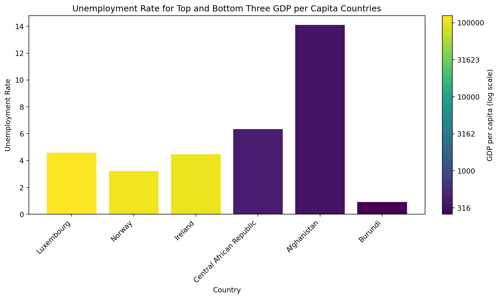

This exploratory data analysis focuses on 3 variables within the WDI dataset: GDP per capita, life expectancy, and unemployment rate. First, summary statistics were calculated to gain a general understanding of these variables. Mean, median, minimum value, maximum value, and standard deviation were calculated and displayed in Table 1.
import pandas as pdimport numpy as npimport matplotlib.pyplot as pltfrom matplotlib import cm, colorsfrom matplotlib.ticker import FuncFormatterwdi = pd.read_csv("wdi.csv")# table of summary statistics for the 3 variablescols = ["gdp_per_capita", "life_expectancy", "unemployment_rate"]df_num = wdi[cols].dropna()stats = df_num.agg(["mean", "median", "min", "max", "std"]).Tstats = stats.rename_axis("variable").reset_index()# round for displaystats[["mean", "median", "min", "max", "std"]] = stats[["mean", "median", "min", "max", "std"]].round(2)display(stats)
Table 1: Summary statistics for GDP per capita, life expectancy, and unemployment rate
variable
mean
median
min
max
std
0
gdp_per_capita
17358.17
6810.11
259.03
125006.02
23532.14
1
life_expectancy
72.17
73.44
53.00
85.38
7.86
2
unemployment_rate
7.25
5.50
0.13
37.85
5.87
Interestingly, there appears to be a large standard deviation for GDP per capita, indicating wide variation in economic status between the countries represented. Because of this, I was curious to learn more about GDP per capita and its relationship to the other variables.
Findings
To visualize the relationship between GDP per capita and life expectancy, the two variables were plotted against each other in a scatterplot, with the GDP per capita placed on a log scale for ease of visualization (Figure 1).
Figure 1: Scatterplot for the relationship between worldwide GDP per capita and life expectancy in 2022
There is a clear positive relationship between GDP per capita and life expectancy. The higher the GDP of a country, the longer the life expectancy, and vice versa (Figure 1). This finding is in line with prior research into this field, which also found this positive relationship. It is considered that when GDP is high, it is an indicator of a country’s wealth. A wealthy government therefore can spend more money and resources on ensuring better quality of life and attention to healthcare. This would result in a healthy population, and by that logic, a longer life expectancy (Țarcă, Țarcă, and Moscalu 2024).
The relationship between GDP per capita and unemployment rate was also of interest. To narrow down the data for analysis, the 3 countries with the highest GDP per capita in 2022 and the 3 countries with the lowest GDP per capita were identified. Luxembourg, Norway, and Ireland landed in the top 3, while Central African Republic, Afghanistan, and Burundi were in the bottom 3 (Figure 2).

Figure 2: Bar graph of unemployment rate for the 3 countries with the highest GDP per capita and the 3 countries with the lowest GDP per capita
Unemployment rate for the top 3 countries varied slightly around 4, which was on the lower end of the unemployment rate range (Figure 2). Surprisingly, there was much greater variation in unemployment rate for the 3 countries with the lowest GDP per capita. There was a greater unemployment rate in the Central African Republic and Afghanistan, compared to the top 3 countries. This is not surprising, since a greater unemployment rate can be understood to indicate a weaker economy. However, Burundi has a very low unemployment rate, and lower than all the other 5 countries represented in Figure 2. Such a low unemployment rate could be due to the fact that unemployment is not even an option in Burundi. Agriculture employs more than 90% of the population, with coffee and tea being the main exports (Schwettmann 2017). In a country that relies heavily on those exports, it can be understood how unemployment is considered “not an option”, resulting in the low unemployment rate.
Conclusion
This exploratory data analysis examined variables in the WDI dataset, including GDP per capita, life expectancy, and unemployment rate. It was found that there is a strong positive relationship between GDP per capita and life expectancy, and that unemployment rate can vary across vastly different GDP per capita values. These findings highlight the complex relationship between various economic indicators and social outcomes, with some being more intuitive than others. In the end, it is important to note that there are many other variables that influence the outcomes we see, and that each country has unique circumstances that must be taken into account in our analyses.
Țarcă, Viorel, Elena Țarcă, and Mihaela Moscalu. 2024. “Social and Economic Determinants of Life Expectancy at Birth in Eastern Europe.” Journal Article. Healthcare (Basel, Switzerland) 12. https://doi.org/10.3390/healthcare12111148.